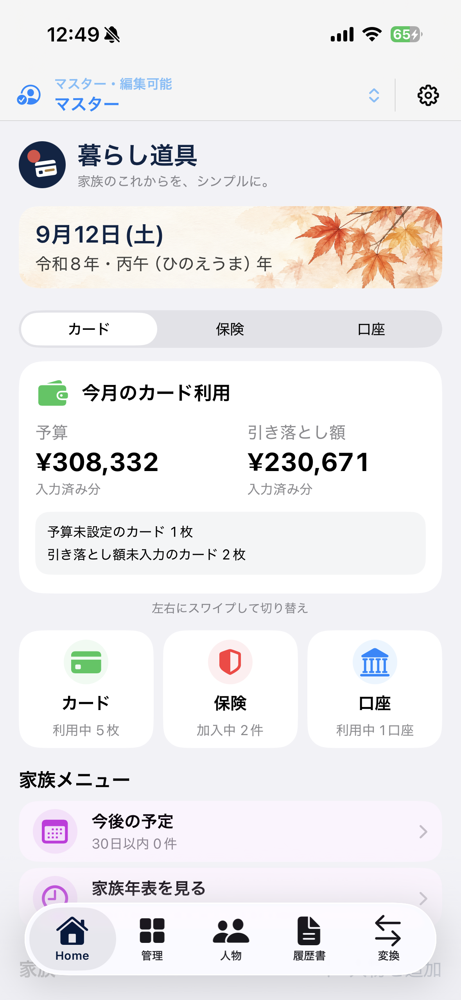
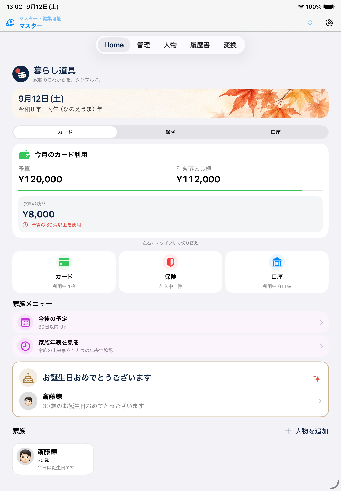

カードの支払い
どのカードで、
いくら支払っているか。
カードごとの引き落とし額と予算を記録。 未入力のカードや支払日を確認し、 グラフで月ごとの推移を振り返れます。
日々の確認に加えて、使っているカードを家族に伝える手がかりに。
今の暮らしを整える。家族のこれからに備える。
カードの支払い、保険、口座残高。
別々に管理していた大切な情報を、ひとつに。
日々の確認にも、家族への備えにも役立つ記録を残せます。
iPhone・iPad対応 ／ 日本語・英語
無料版には登録数などの制限があります。

記録したいときも、確かめたいときも。
暮らし道具を作った理由のひとつ。
「カードは？」
「保険は？」
「預金口座は？」親が亡くなったあと、子どもたちに一から探させたくない。
元気な今から、大切な情報を1か所にまとめておく。
これも「暮らし道具」を作った理由のひとつです。
暮らし道具の開発者より
普段は自分のために。
必要なときには、家族の手がかりに。
どのカードを使い、どの保険に入り、どこに口座を持っているか。 記録をまとめ、元気なうちに家族へ共有しておく。 そんな備えにも使っていただきたいと考えています。
日々の記録が、家族への手がかりになる。
毎月の支払いも、時々見直す契約も。
まずは、自分が使っているものから整理できます。
カードの支払い
カードごとの引き落とし額と予算を記録。 未入力のカードや支払日を確認し、 グラフで月ごとの推移を振り返れます。
日々の確認に加えて、使っているカードを家族に伝える手がかりに。
保険の契約
契約内容、保障、保険料をひとまとめに。 更新・満期などの予定とあわせて、 加入中の保険を確認できます。
加入している保険を、家族が確認し始めるための手がかりに。
口座の残高
銀行の残高や証券口座の評価額を、確認日とともに記録。 口座別の履歴やグラフで変化を確認できます。
口座の所在と、最後に確認した金額を整理しておくために。
金額は日本円で手入力します。 金融機関・カード会社・保険会社との自動連携はありません。
一度に全部、そろえなくても。
利用中のカード、加入中の保険、持っている口座。 手元の明細や契約書類を見ながら、ひとつずつ登録します。
月々の支払額を確認したときや、 契約を見直したときに記録を更新。 家族のためだけに別の一覧を作る負担を減らせます。
暗号化した閲覧専用のコピーを家族の端末へ手動で送れます。 受け取った家族と、内容を一緒に確認しておきましょう。
記録は端末内に保存されます。 保存するだけで家族へ自動的に届く機能はありません。 コピーの更新も手動です。 口座の情報を含める場合は、送信時に共有対象として選択してください。
お金の情報だけでなく、家族の歩みも。
誕生日や年齢を確かめる。 進学や就職の年月を振り返る。 家族の出来事も、ひとつのアプリに残せます。
生年月日や続柄を登録して、 家族の年齢や今後の予定を確認できます。
学歴のひな形を実際の経歴に合わせて編集。 職歴や資格、人生の出来事も年表にまとめられます。
和暦・西暦変換や年齢計算も利用できます。 明治から令和までの変換に対応しています。

大切な情報だから。
アカウントを作らずに使い始められます。 広告を表示せず、記録と確認に集中できる環境を大切にしています。
記録は端末内に保存されます。 アプリロックと暗号化バックアップにも対応しています。
受け取った端末では閲覧専用のため、 コピーから元の記録を書き換えることはできません。 自動同期や共同編集は行いません。
無料ではじめて、必要に応じて。
使い心地を確かめて、記録する情報が増えたらProへ。
家族へのデータコピーは、無料版でも利用できます。
必要な道具から、少しずつ。
日付の確認にも、毎月の記録にも。
記録が増えても、ひとつに。
買い切り・月額料金なし。
価格はアプリ内でご確認ください。
和暦・西暦変換、年齢計算、バックアップ、 端末間のデータコピーは無料版でも利用できます。 Proはアプリ内購入です。
自動では届きません。 記録はお使いの端末内に保存されます。 家族に情報を残す目的で利用する場合は、 元気なうちに閲覧専用のコピーを渡し、 相手の端末で内容を確認しておいてください。 内容を変更したときは、新しいコピーを送り直します。
送る側と受け取る側の対応端末に、暮らし道具をインストールします。 設定のデータコピー機能で、 受け取る端末のQRコードを送る端末で読み取り、登録します。 その後、暗号化したファイルを手動で送り、 受け取る側で確認・取り込みを行います。 口座情報は初期状態では共有対象に含まれません。
記録されるのは、ご自身で入力した情報です。 未登録のカード・保険・口座を自動で見つけることはできません。 家族が情報を確認するための手がかりとして、 元の明細や契約書類もあわせて管理してください。
連携は必要ありません。 各社の明細やアプリで確認した金額を手入力して管理します。 口座のログイン情報を入力する必要もありません。
暗号化バックアップの作成と復元に対応しています。 機種変更の前に最新のバックアップを作成し、 復元に必要な情報とあわせて保管してください。 家族が閲覧するためのデータコピーとは別の機能です。
無料版の範囲内で継続して利用できます。 登録数の上限解除や追加の分析・出力機能が必要な場合は、 買い切りのProをご利用ください。
まずは、カード1枚、保険1件、口座1つから。
元気な今、大切な情報に置き場所を。
iPhone・iPad ／ iOS・iPadOS 17以降